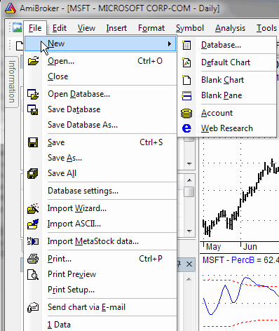

New
Open
Opens a document (account, database, or HTML file - you can pick the document type
from the "Files of type" combo in the File selector window)
Close
Closes the current (active) document window (chart, account, or web research)
Open Database
Allows you to open an existing AmiBroker database. Please select the database folder and press OK.
Save Database
Saves the currently used database
Save Database As...
Saves the database into a new location
Save
Saves the current document (account, or HTML file)
Save As...
Saves the current document (account, or HTML file) under a new name
Save All
Saves all documents currently open
Database Settings
Opens the Database Settings dialog that allows you to change your database parameters or intraday settings.
Import Wizard
Launches the ASCII Import Wizard window, which allows you to easily import ASCII (text) files into your database
Import ASCII
Allows you to import ASCII files with the use of predefined import formats. To learn more how to use the ASCII importer, please read the ASCII Importer reference chapter.
Import MetaStock data
Launches the Metastock Importer window.
IMPORTANT NOTE: The Metastock importer should be used ONLY if you want to import
MS data to a native, local AmiBroker database once. If you want AmiBroker to
just read the Metastock database DIRECTLY without the need to import
new data over and over, please set up your database WITH
THE METASTOCK PLUGIN as described in the Tutorial.
Print
Allows you to print currently displayed charts.
Print Preview
Prints the currently displayed charts with a preview (you can check the appearance of the document before it's printed).
Print Setup
Opens the printout setup dialog.
Send Chart via E-mail
AmiBroker creates a .png image (with the currently displayed chart) and uses your default mailing program (e.g., Outlook Express) to send the file as an attachment.
Exit
Closes the AmiBroker program.